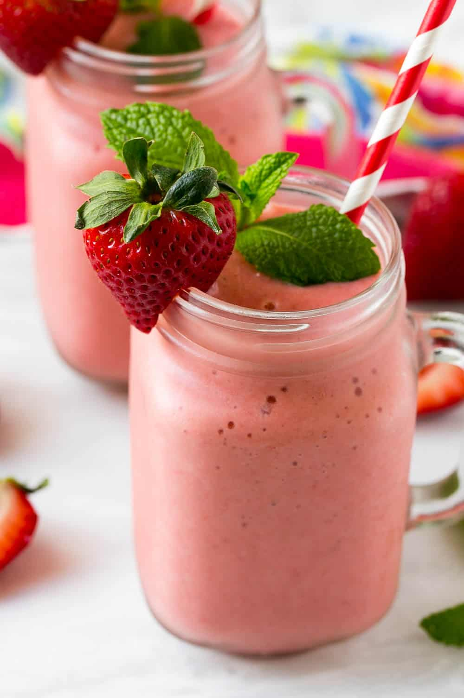

Juiciest and Coldest Strawberry Smoothie

Description
The summer's heat is sometimes... too unforgiving, and what better way to quench your thirst than a fine, cold and energy-filled strawberry smoothie? This recipe describes the method to make it, and serves 5 people.
Ingredients
- 8-10 fresh or frozen strawberries
- a banana, fresh or frozen
- 1/2 cup of plain Greek yogurt
- peanut butter or almond butter or chia seeds
- 1-2 tsps of honey if strawberries not sweet
- water or milk
Steps
- Prepare all ingredients.
- Add into blender.
- Blend until smooth texture.
- Serve fresh with ice cubes!
Return to homepage...